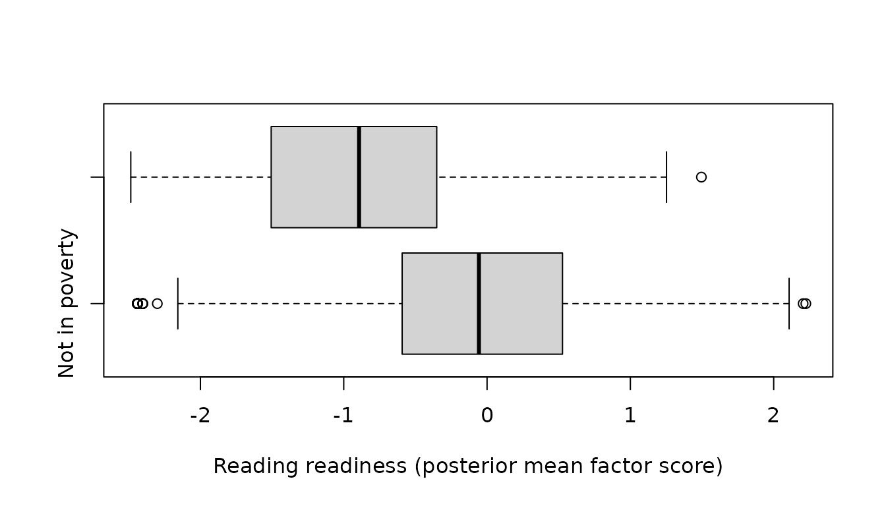

The problem with ordinary LTA
Latent transition analysis puts every person in a latent status at each occasion and estimates how they move between statuses. It assumes that, within a status, people are exchangeable: two children in the early word reading stage are equally likely to know their ending sounds, and any difference between them is noise.
That assumption is usually false. People differ in stable, trait-like ways that are not stages at all: a child with a generally high propensity to endorse the items will look “further along” at every occasion, and an ordinary LTA has only one way to represent that — as a status. The consequences are systematic (Muthén & Asparouhov, 2022):
- Stability is overstated. A child who scores high at every occasion because of a stable trait is recorded as staying in an advanced status, so the diagonal of the transition matrix inflates.
- Statuses absorb the trait. Item-response probabilities are pushed towards 0 and 1, statuses look more distinct than they are, and BIC can ask for extra statuses that are really levels of the trait.
- Covariate effects are misattributed. A covariate that predicts the trait shows up as predicting transitions.
Random-intercept LTA (RI-LTA) adds a person-level factor to the measurement model — a random intercept shared by every indicator at every occasion — so that stable between-person differences have somewhere to go other than the statuses. What is left in the transition matrices is then within-person change.
This vignette walks through the pipeline an applied analysis needs:
ordinary LTA as a baseline, the random intercept, model comparison, and
covariates. It uses the reading-proficiency data introduced in
vignette("lta"); read that first for what the data are and
how the ordinary model is interpreted.
Setup
data(ecls_reading)
items <- ecls_reading[, -1]Two arguments appear on every fit below. fit_lta()’s
defaults put a light prior on the status and transition probabilities
(smoothing = 1) and on the item probabilities
(bayes_constants), which keeps estimates off the boundary
and is the right default for exploratory work. Here they are switched
off so the fits are plain maximum likelihood, which is what the
published analyses of these data report and what the numbers below can
be checked against. On a sample this size the difference is about one
log-likelihood unit and no change in interpretation.
Every fit is also run at standard_errors = FALSE until
the final model, because the standard errors are the slow part and are
not needed to compare models.
Step 1: the ordinary LTA
fit_lta0 <- fit_lta(items, n_statuses = 3, times = 4, n_init = 50,
random_state = 7, standard_errors = FALSE,
smoothing = ml$smoothing, bayes_constants = ml$bayes_constants)
fit_lta0
#>
#> =========================================================
#> LATENT TRANSITION ANALYSIS
#> =========================================================
#> Latent statuses : 3
#> Items x Occasions : 5 x 4
#> Item parameters : binary, held equal across occasions
#> Transitions : 3 tables, one per pair of occasions
#> Converged : TRUE (in 34 iterations)
#> ---------------------------------------------------------
#> Log-Likelihood : -21793.17
#> Parameters : 35
#> AIC : 43656.34
#> BIC : 43872.70
#> SABIC : 43761.49
#> Rel. Entropy : 0.9042
#> Best solution : found by 48 of 50 starts
#> ---------------------------------------------------------
#> Latent status prevalences by occasion:
#> Status 1 Status 2 Status 3
#> T1 0.6937 0.2836 0.0227
#> T2 0.2348 0.6353 0.1299
#> T3 0.1417 0.6266 0.2318
#> T4 0.0406 0.1542 0.8052
#>
#> Note: 3 transition(s) estimated at the zero boundary; see $boundary.
#> =========================================================
#> Type summary(model) for transitions, measurement_summary(model) for items.Three stages of learning to read — low alphabet knowledge,
early word reading, early reading comprehension — with
69% of children in the first at the start of kindergarten and 81% in the
third by the end of first grade. (The item probabilities, and the note
about the ones at the boundary, are in vignette("lta").)
Keep the transition matrices in mind:
transition_matrix(fit_lta0)
#> $`T1 -> T2`
#> to
#> from Status 1 Status 2 Status 3
#> Status 1 3.382748e-01 6.493184e-01 0.01240686
#> Status 2 5.390649e-04 6.517036e-01 0.34775735
#> Status 3 1.388794e-11 1.388794e-11 1.00000000
#>
#> $`T2 -> T3`
#> to
#> from Status 1 Status 2 Status 3
#> Status 1 0.596264013 0.40147254 0.002263452
#> Status 2 0.002124324 0.83720306 0.160672614
#> Status 3 0.002361944 0.00347309 0.994164966
#>
#> $`T3 -> T4`
#> to
#> from Status 1 Status 2 Status 3
#> Status 1 0.2626498893 5.050921e-01 0.2322580
#> Status 2 0.0051735930 1.318729e-01 0.8629535
#> Status 3 0.0006931915 9.999485e-13 0.9993068Step 2: add a continuous random intercept
random_intercept = "continuous" adds a normally
distributed factor with one loading per indicator, held equal across
occasions — if the loadings changed over time, the factor would not be a
stable trait. The factor is integrated out numerically, and
n_quadrature sets how finely: 30 nodes is the setting the
published analyses of these data used, and is checked below.
fit_ri <- fit_lta(items, n_statuses = 3, times = 4, n_init = 20,
random_intercept = "continuous", n_quadrature = 30,
random_state = 7, standard_errors = FALSE,
smoothing = ml$smoothing, bayes_constants = ml$bayes_constants)
#> Warning: A response probability has collapsed towards the boundary: context in
#> class 1 (logit -10.87, p = 1.9e-05); sight in class 1 (logit -8.55, p =
#> 0.000194); letters in class 3 (logit +8.08, p = 1). These estimates are not
#> interpretable, and this fit's BIC cannot be compared with a clean fit's. Ways
#> out, to choose between on substantive grounds: (1) fewer classes; or (2) a
#> stronger categorical prior, bayes_constants = list(categorical = 3). See
#> ?fit_mixture for why, and what to check afterwards.
fit_ri
#>
#> =========================================================
#> LATENT TRANSITION ANALYSIS
#> =========================================================
#> Latent statuses : 3
#> Items x Occasions : 5 x 4
#> Item parameters : binary, held equal across occasions
#> Transitions : 3 tables, one per pair of occasions
#> Converged : TRUE (in 270 iterations)
#> ---------------------------------------------------------
#> Log-Likelihood : -20328.51
#> Parameters : 40
#> AIC : 40737.02
#> BIC : 40984.29
#> SABIC : 40857.19
#> Rel. Entropy : 0.8544
#> Best solution : found by 3 of 3 starts that ran to convergence (of 20 requested)
#> ---------------------------------------------------------
#> Latent status prevalences by occasion:
#> Status 1 Status 2 Status 3
#> T1 0.9481 0.0489 0.0031
#> T2 0.1612 0.8168 0.0220
#> T3 0.0407 0.8789 0.0804
#> T4 0.0109 0.0167 0.9725
#>
#> Note: 6 transition(s) estimated at the zero boundary; see $boundary.
#> =========================================================
#> Type summary(model) for transitions, measurement_summary(model) for items.Two things before the numbers. The warning is the same substantive
zero the ordinary model has — nobody in the low-alphabet stage reads
words in context — now stated on the logit scale the random-intercept
model works on, where a probability of zero is a logit of minus
infinity. It is worth reading once; it recurs on every fit below for the
same reason and is silenced from here on. And
Best solution: found by 3 of 3 starts that ran to convergence (of 20 requested)
is how the random-intercept search reports: the twenty starts are ranked
cheaply and only the best few are run to convergence, so replication is
counted among those.
knitr::opts_chunk$set(warning = FALSE)The fit line to read is the log-likelihood: −20,329 against −21,793, for five more parameters (the loadings). A BIC drop of almost three thousand is not a subtle improvement. Do not turn this into a likelihood-ratio test: the ordinary LTA is the random-intercept model with every loading at zero, which is on the boundary of the parameter space, so the usual chi-squared reference does not apply. Compare by BIC.
The loadings
random_intercept_loadings(fit_ri)
#> item loading se z
#> 1 letters 3.489279 NA NA
#> 2 beginning 2.740160 NA NA
#> 3 ending 2.569065 NA NA
#> 4 sight 3.752312 NA NA
#> 5 context 3.724026 NA NAEvery loading is large — on the logit scale, a child one standard
deviation above average on the trait has odds of mastering sight words
exp(3.75) ≈ 42 times those of an average child in the
same status. The trait is best read as reading readiness: a stable,
time-invariant dimension that the ordinary model had been squeezing into
the stages.
What changes in the statuses
measurement_summary(fit_ri)
#>
#> =========================================================
#> MEASUREMENT MODEL PARAMETERS (by occasion)
#> =========================================================
#> Held equal across occasions; one set shown.
#> =========================================================
#> MEASUREMENT MODEL PARAMETERS
#> =========================================================
#>
#> CATEGORICAL PROBABILITIES
#> Indicator | Overall | Class 1 | Class 2 | Class 3
#> ------------------------------------------------------------
#> letters@T1 | 0.860 | 0.628 | 0.940 | 0.980
#> beginning@T1 | 0.700 | 0.303 | 0.806 | 0.942
#> ending@T1 | 0.573 | 0.167 | 0.631 | 0.904
#> sight@T1 | 0.315 | 0.020 | 0.208 | 0.808
#> context@T1 | 0.152 | 0.005 | 0.058 | 0.459
#> =========================================================Compared with the ordinary LTA, the item probabilities move away from 0 and 1: in the low-alphabet stage 63% now know their letters (not 51%) and 30% their beginning sounds (not 7%), and in the comprehension stage sight words are at 81% rather than 98%. The statuses are less extreme because the extremity was partly the trait. The stages keep their meaning and their order.
What changes in the prevalences and transitions
round(status_prevalences(fit_lta0), 3)
#> Status 1 Status 2 Status 3
#> T1 0.694 0.284 0.023
#> T2 0.235 0.635 0.130
#> T3 0.142 0.627 0.232
#> T4 0.041 0.154 0.805
round(status_prevalences(fit_ri), 3)
#> Status 1 Status 2 Status 3
#> T1 0.948 0.049 0.003
#> T2 0.161 0.817 0.022
#> T3 0.041 0.879 0.080
#> T4 0.011 0.017 0.972The picture of the cohort changes considerably. Under the random-intercept model 95% of children start in the low-alphabet stage (not 69%), 82% are in early word reading by the spring of kindergarten (not 64%) and 97% reach comprehension by the end of first grade (not 81%). The ordinary model had spread children across statuses at every occasion partly on the basis of a trait; with the trait removed, nearly all children are found to pass through the same sequence, just at different times.
transition_matrix(fit_ri)
#> $`T1 -> T2`
#> to
#> from Status 1 Status 2 Status 3
#> Status 1 1.700197e-01 8.197157e-01 0.01026464
#> Status 2 3.663895e-83 8.110397e-01 0.18896028
#> Status 3 1.357844e-301 2.085369e-301 1.00000000
#>
#> $`T2 -> T3`
#> to
#> from Status 1 Status 2 Status 3
#> Status 1 0.242938406 7.384875e-01 0.01857410
#> Status 2 0.001283205 9.303203e-01 0.06839652
#> Status 3 0.021901171 1.740573e-173 0.97809883
#>
#> $`T3 -> T4`
#> to
#> from Status 1 Status 2 Status 3
#> Status 1 0.165948500 4.653395e-07 0.8340510
#> Status 2 0.003912383 1.896301e-02 0.9771246
#> Status 3 0.008504389 1.357289e-270 0.9914956The transition matrices now describe a cohort moving almost as one: 82% leave the low-alphabet stage over the first half of kindergarten, and essentially everyone in early word reading moves up to comprehension over the second half of first grade (98%, against 86% in the ordinary model). The most common paths through the four occasions make the same point:
paths <- function(fit, n = 3)
head(transition_patterns(fit)[order(-transition_patterns(fit)$proportion), ], n)
paths(fit_lta0)
#> T1 T2 T3 T4 count proportion
#> 15 1 2 2 3 1163.3742 0.32541935
#> 42 2 2 2 3 477.4005 0.13353860
#> 54 2 3 3 3 350.3065 0.09798783
paths(fit_ri)
#> T1 T2 T3 T4 count proportion
#> 15 1 2 2 3 2525.5556 0.70644911
#> 6 1 1 2 3 415.8182 0.11631278
#> 18 1 2 3 3 188.4080 0.05270153In the ordinary LTA the most common path accounts for a third of the children; in the random-intercept model the path 1 → 2 → 2 → 3 — low alphabet in the fall of kindergarten, early word reading through the following year, comprehension by the end of first grade — accounts for seven in ten.
Is the quadrature fine enough?
The factor is integrated numerically, and too coarse a grid biases
the log-likelihood. refine_from continues the converged fit
on a finer grid without repeating the random-start search, so the check
is cheap:
fit_ri60 <- fit_lta(items, n_statuses = 3, times = 4,
random_intercept = "continuous", n_quadrature = 60,
refine_from = fit_ri, standard_errors = FALSE,
smoothing = ml$smoothing, bayes_constants = ml$bayes_constants)
c(nodes_30 = fit_ri$loglik, nodes_60 = fit_ri60$loglik)
#> nodes_30 nodes_60
#> -20328.51 -20328.34
round(cbind(nodes_30 = random_intercept_loadings(fit_ri)$loading,
nodes_60 = random_intercept_loadings(fit_ri60)$loading), 3)
#> nodes_30 nodes_60
#> [1,] 3.489 3.499
#> [2,] 2.740 2.752
#> [3,] 2.569 2.575
#> [4,] 3.752 3.737
#> [5,] 3.724 3.759Doubling the grid moves the log-likelihood by less than 0.2 and the
loadings by less than 0.01 — nothing that touches a conclusion. The
log-likelihood is not monotone in the node count (see
?fit_lta), so check over a range rather than one step up
when the fit’s thresholds are extreme.
Step 3: a binary random intercept, and the model comparison
The continuous factor says people vary along a smooth dimension. The
alternative is two latent types of person — a binary random
intercept, random_intercept = "binary" — which asks a
different question and is compared by BIC like everything else:
fit_ri2 <- fit_lta(items, n_statuses = 3, times = 4, n_init = 20,
random_intercept = "binary",
random_state = 7, standard_errors = FALSE,
smoothing = ml$smoothing, bayes_constants = ml$bayes_constants)
fits <- list(`Regular LTA` = fit_lta0,
`RI-LTA, binary` = fit_ri2,
`RI-LTA, continuous` = fit_ri)
data.frame(parameters = sapply(fits, `[[`, "n_params"),
loglik = round(sapply(fits, `[[`, "loglik"), 1),
BIC = round(sapply(fits, function(f) f$metrics$bic), 1))
#> parameters loglik BIC
#> Regular LTA 35 -21793.2 43872.7
#> RI-LTA, binary 41 -20915.6 42166.7
#> RI-LTA, continuous 40 -20328.5 40984.3Both random intercepts improve enormously on the ordinary LTA, and the continuous one is far better than the binary one. That is the usual result with binary indicators (Muthén & Asparouhov find the same on their own example): a two-type intercept is a coarse approximation to a trait that varies continuously. Write it up as a finding — “in these data the continuous random-intercept model fits best” — not as a rule.
Step 4: covariates
A covariate can act in three places, and RI-LTA is what lets them be
told apart: on the stable trait
(predictors_random_intercept), on the status children start
in (predictors_initial) and on the transitions
(predictors_transition). These are different questions.
Poverty predicting the trait means poor children have lower reading
readiness throughout; poverty predicting transitions means they advance
more slowly given their readiness.
Random-start searches are slow once the factor is regressed on
covariates, and unnecessary: the unconditional fit is already the right
neighbourhood. refine_from continues from it in a single
run.
pov <- ecls_reading["poverty"]
fit_pov_ri <- fit_lta(items, n_statuses = 3, times = 4,
random_intercept = "continuous", n_quadrature = 30,
predictors_random_intercept = pov,
refine_from = fit_ri, standard_errors = FALSE,
smoothing = ml$smoothing, bayes_constants = ml$bayes_constants)
fit_pov_tr <- fit_lta(items, n_statuses = 3, times = 4,
random_intercept = "continuous", n_quadrature = 30,
predictors_random_intercept = pov,
predictors_transition = pov,
refine_from = fit_pov_ri,
smoothing = ml$smoothing, bayes_constants = ml$bayes_constants)
fits <- list(`RI-LTA` = fit_ri,
`+ poverty -> trait` = fit_pov_ri,
`+ poverty -> trait and transitions` = fit_pov_tr)
data.frame(parameters = sapply(fits, `[[`, "n_params"),
loglik = round(sapply(fits, `[[`, "loglik"), 1),
BIC = round(sapply(fits, function(f) f$metrics$bic), 1))
#> parameters loglik BIC
#> RI-LTA 40 -20328.5 40984.3
#> + poverty -> trait 41 -20127.7 40590.8
#> + poverty -> trait and transitions 47 -20106.2 40597.0One parameter — poverty on the trait — buys 200 log-likelihood units.
Letting poverty also shift the transitions (six more parameters) buys
twenty-one more: a likelihood-ratio test of the two, which is legitimate
here because both models have the random intercept, rejects the
restriction decisively, while BIC prefers the smaller model. The two
criteria disagree because they weigh parsimony differently, and a
write-up should say so rather than pick the one it likes. Compare either
with vignette("lta"), where poverty on the initial status
and the transitions of the ordinary LTA was worth 210 units:
most of that effect was the trait all along.
lr_test(fit_pov_ri, fit_pov_tr)
#>
#> Likelihood-ratio test for nested models
#> ---------------------------------------------------------
#> Restricted : LL = -20127.6888 parameters = 41
#> Full : LL = -20106.2426 parameters = 47
#> -2 x diff : 42.8924 df = 6 p = 1.225e-07
#> The restriction is rejected: the full model fits significantly better.A fit continued with refine_from keeps its donor’s
status labels, so status 1 is still the low-alphabet stage and status 3
comprehension — check with status_prevalences() when in
doubt — and every transition contrast below is relative to reaching
comprehension:
lta_covariate_summary(fit_pov_tr)
#>
#> =========================================================
#> LATENT TRANSITION MODEL - COVARIATE EFFECTS (logits)
#> =========================================================
#> Reference status: 3. Coefficients are contrasts against it;
#> exp(coefficient) is an odds ratio.
#>
#> PREDICTING TRANSITIONS
#>
#> [occasion 1 -> 2]
#> Status Term Estimate SE z p OR
#> to Status 1 Intercept -8.602 15.539 -0.55 0.5799 0.000
#> to Status 1 from:1 11.474 15.540 0.74 0.4603 96199.286
#> to Status 1 from:2 -1.875 33.144 -0.06 0.9549 0.153
#> to Status 1 poverty 0.005 0.303 0.02 0.9857 1.005
#> to Status 2 Intercept -10.487 41.486 -0.25 0.8004 0.000
#> to Status 2 from:1 15.006 41.486 0.36 0.7176 3289186.085
#> to Status 2 from:2 11.748 41.486 0.28 0.7770 126502.204
#> to Status 2 poverty -0.648 0.290 -2.23 0.0255 0.523
#>
#> [occasion 2 -> 3]
#> Status Term Estimate SE z p OR
#> to Status 1 Intercept -5.124 0.906 -5.66 1.53e-08 0.006
#> to Status 1 from:1 7.346 0.949 7.74 1.02e-14 1549.762
#> to Status 1 from:2 -0.011 1.128 -0.01 0.992 0.989
#> to Status 1 poverty 1.870 0.271 6.90 5.34e-12 6.488
#> to Status 2 Intercept -11.129 26.139 -0.43 0.670 0.000
#> to Status 2 from:1 14.778 26.140 0.57 0.572 2617054.928
#> to Status 2 from:2 13.728 26.139 0.53 0.599 916596.076
#> to Status 2 poverty 0.109 0.197 0.55 0.579 1.116
#>
#> [occasion 3 -> 4]
#> Status Term Estimate SE z p OR
#> to Status 1 Intercept -4.814 0.635 -7.58 3.51e-14 0.008
#> to Status 1 from:1 3.823 0.661 5.78 7.35e-09 45.728
#> to Status 1 from:2 -0.777 0.697 -1.11 0.265169 0.460
#> to Status 1 poverty 0.181 0.293 0.62 0.535262 1.199
#> to Status 2 Intercept -10.946 11.783 -0.93 0.352909 0.000
#> to Status 2 from:1 2.471 12.499 0.20 0.843314 11.829
#> to Status 2 from:2 6.560 11.783 0.56 0.577702 706.285
#> to Status 2 poverty 1.105 0.294 3.75 0.000174 3.018
#>
#> PREDICTING THE RANDOM INTERCEPT (linear regression, residual variance fixed at 1)
#> The factor's sign is fixed by making the largest loading positive;
#> reversing that convention reverses every coefficient here.
#> Term Estimate SE z p
#> poverty -0.882 0.057 -15.45 <1e-16
#>
#> =========================================================Read the sign of the trait coefficient against the loadings, which
are positive: poverty lowers reading readiness by about 0.9 standard
deviations of the factor, a large and precisely estimated effect. With
that in the model the transition effects that remain are the ones
given readiness: over the summer a child in poverty has six
times the odds of staying in low alphabet rather than reaching
comprehension, and over first grade three times the odds of stopping at
early word reading. The from: terms are origin-status
intercepts, several of them for cells almost nobody occupies, which is
what their standard errors say.
The final model was fitted with standard errors, so the loadings now come with theirs:
random_intercept_loadings(fit_pov_tr)
#> item loading se z
#> 1 letters 3.099459 0.11866953 26.11841
#> 2 beginning 2.440210 0.07678495 31.77980
#> 3 ending 2.308522 0.06589985 35.03076
#> 4 sight 3.412716 0.14178025 24.07046
#> 5 context 3.469310 0.15731501 22.05326random_intercept_scores() returns each child’s estimated
position on the trait, which is the natural quantity to relate to
anything else in the data:
scores <- random_intercept_scores(fit_pov_tr)
boxplot(scores$mean_score ~ ecls_reading$poverty, horizontal = TRUE,
names = c("Not in poverty", "In poverty"),
xlab = "Reading readiness (posterior mean factor score)", ylab = "")
Practical notes
- Sample size. Muthén & Asparouhov’s guidance for binary indicators is that RI-LTA does well from about N = 500 with three or more occasions, but may need N of 4,000 with only two; for the continuous- indicator analogue, Tseng (2024) puts it at upwards of 2,000 cases for 80% power at a between-profile separation of d = 0.75. The asymmetry that makes trying it worthwhile anyway: leaving out a random intercept that belongs distorts the statuses and the transitions, while adding one that does not belong costs a few parameters that BIC will identify as wasted.
-
Starts. Random-intercept models have a well-known
second optimum in which the factor takes over the statuses.
fit_lta()’s restart search is built for it, but still read theBest solutionline, and raisen_initwhen it is not replicated. -
Quadrature. Check
n_quadraturethe way it is checked above, over a range of node counts, and expect the node count to matter more once the factor is regressed on covariates. -
Testing. Compare random-intercept and ordinary LTA
by BIC, never by
lr_test(). Nested covariate models within the random-intercept family can be tested withlr_test()as usual. - Not available. Continuous indicators, random slopes, correlated residuals across occasions and second-order (lag-2) transitions are not part of this release; the last of these is reported as significant in both of the article’s own examples, and is a real simplification.
References
Muthén, B., & Asparouhov, T. (2022). Latent transition analysis with random intercepts (RI-LTA). Psychological Methods, 27(1), 1–16. https://doi.org/10.1037/met0000370
Kaplan, D. (2008). An overview of Markov chain methods for the study of stage-sequential developmental processes. Developmental Psychology, 44(2), 457–467. https://doi.org/10.1037/0012-1649.44.2.457
Tseng, M.-C. (2024). Latent profile transition analysis with random intercepts (RI-LPTA). Structural Equation Modeling, 31(4), 626-634. https://doi.org/10.1080/10705511.2023.2284671